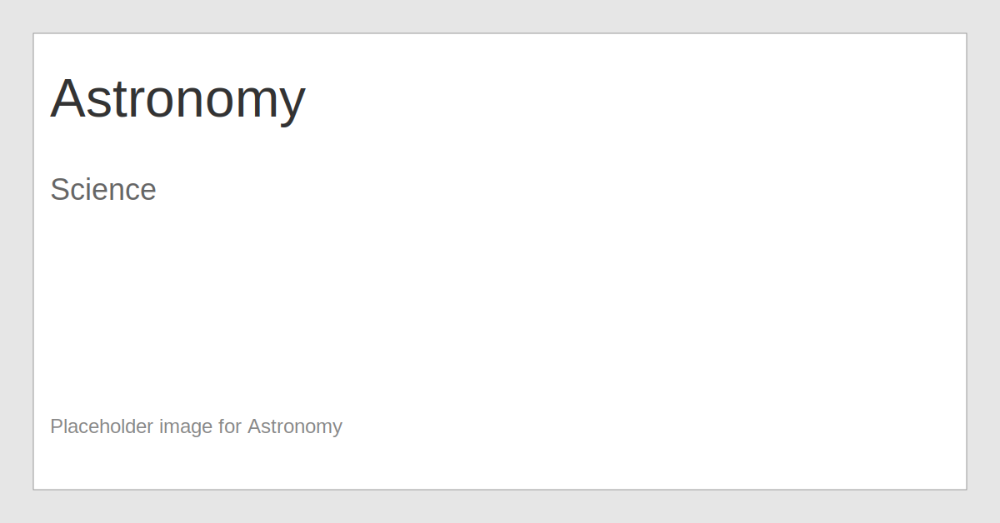

Astronomy
Astronomy studies celestial objects and phenomena beyond Earth, from planets to galaxies.
Tip: Use the Back button above to return to the homepage. The homepage loads with only the three top-level subjects visible.
Astronomy studies celestial objects and phenomena beyond Earth, from planets to galaxies.
Tip: Use the Back button above to return to the homepage. The homepage loads with only the three top-level subjects visible.